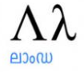

I'm from Hungary and born and grow up in Veszprém. I attended high school and university in my hometown. At University of Pannonia I received a degree in bioengineering. In my freetime I like to play and learn guitar, mostly on acoustic. Also I often listen to music old and new alike. My favourite band is The Beatles, and my guitar hero is George Harrison. On my computer I usually play games alone or with my friends. As a freetime activity I regularly go for a long walk in the city centre.